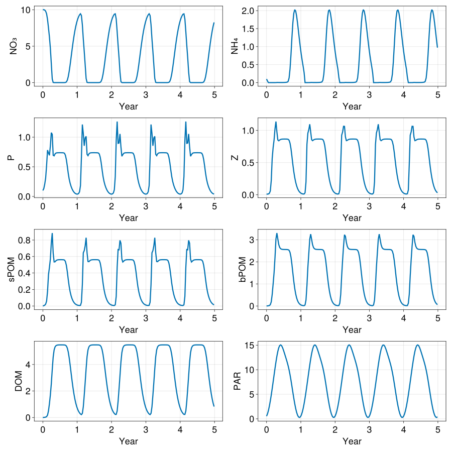

Box model
In this example we setup a LOBSTER biogeochemical model in a single box configuration. This example demonstrates:
- How to setup OceanBioME's biogeochemical models as a stand-alone box model
Install dependencies
First we check we have the dependencies installed
using Pkg
pkg"add OceanBioME"Model setup
Load the packages and setup the initial and forcing conditions
using OceanBioME, Oceananigans, Oceananigans.Units
const year = years = 365dayThis is forced by a prescribed time-dependent photosynthetically available radiation (PAR)
PAR⁰(t) = 60 * (1 - cos((t + 15days) * 2π / year)) * (1 / (1 + 0.2 * exp(-((mod(t, year) - 200days) / 50days)^2))) + 2
z = -10 # specify the nominal depth of the box for the PAR profile
PAR(t) = PAR⁰(t) * exp(0.2z) # Modify the PAR based on the nominal depth and exponential decaySet up the model. Here, first specify the biogeochemical model, followed by initial conditions and the start and end times
model = BoxModel(biogeochemistry = LOBSTER(grid = BoxModelGrid, light_attenuation_model = nothing), forcing = (; PAR))
set!(model, NO₃ = 10.0, NH₄ = 0.1, P = 0.1, Z = 0.01)
simulation = Simulation(model; Δt = 5minutes, stop_time = 5years)
simulation.output_writers[:fields] = JLD2OutputWriter(model, model.fields; filename = "box.jld2", schedule = TimeInterval(10days), overwrite_existing = true)
prog(sim) = @info "$(prettytime(time(sim))) in $(prettytime(simulation.run_wall_time))"
simulation.callbacks[:progress] = Callback(prog, IterationInterval(1000000))Callback of prog on IterationInterval(1000000)Run the model (should only take a few seconds)
@info "Running the model..."
run!(simulation)[ Info: Running the model...
[ Info: Initializing simulation...
[ Info: 0 seconds in 0 seconds
[ Info: ... simulation initialization complete (2.612 seconds)
[ Info: Executing initial time step...
[ Info: ... initial time step complete (3.943 seconds).
[ Info: Simulation is stopping after running for 1.294 minutes.
[ Info: Simulation time 1825 days equals or exceeds stop time 1825 days.
Load the output
times = FieldTimeSeries("box.jld2", "P").times
timeseries = NamedTuple{keys(model.fields)}(FieldTimeSeries("box.jld2", "$field")[1, 1, 1, :] for field in keys(model.fields))(NO₃ = [10.0, 10.014827328036342, 9.958973722158486, 9.803510613808989, 9.442779928636611, 8.662609382795122, 7.509425754602352, 6.280822990087396, 4.72964598342781, 2.60376563787048, 0.49699245130690484, 0.021499125644528348, 0.0014896011075734008, 0.0005181109260939956, 0.00040413734004946515, 0.0003788278285530152, 0.0003887009996099481, 0.00042747049764951914, 0.0004989264981384905, 0.0006143667401393277, 0.0007996744617200363, 0.0011245889370245369, 0.0018425573642498626, 0.004405509633903554, 0.01911625310848332, 0.091782679605407, 0.327540467654243, 0.8143759978230607, 1.542605606091747, 2.4462135555801874, 3.442251294822056, 4.453429066785595, 5.419350008140919, 6.299293076164257, 7.070689878415742, 7.725664026511056, 8.266854599031836, 8.703203191150706, 9.045788752042684, 9.301924499885569, 9.453762432649627, 9.216421551483684, 7.959939159824289, 5.998084570219725, 4.28953200287165, 2.442860379072048, 0.5708245715584293, 0.0306981328260291, 0.002071954242987756, 0.0006018210738275528, 0.00043249079507352124, 0.00038597753207941885, 0.00038064927837311036, 0.00040470869928793825, 0.00045877394696732806, 0.0005501210285213777, 0.0006956583075939321, 0.0009366208575302122, 0.0013998926123158584, 0.002654946672196228, 0.008666991688567202, 0.042882136134533386, 0.18162706047438126, 0.5381699877098738, 1.1517100495687758, 1.9775946185313515, 2.9378276650214317, 3.9501808624390957, 4.94504899256489, 5.87187034201607, 6.699349137811017, 7.412761296280663, 8.01002330561914, 8.497440705478187, 8.885568371027006, 9.184658154411359, 9.394839414103416, 9.444413641562223, 8.720569569452355, 6.9834598066344995, 5.122056150068306, 3.4110657579534136, 1.428294290636611, 0.14268764963323058, 0.007129342725698602, 0.0009154630696496236, 0.00048744553357680414, 0.00040228576990209607, 0.00037936309135572785, 0.00038913197666488994, 0.000427694366324418, 0.0004990406478852701, 0.0006144300158900835, 0.0007997139734987333, 0.0011246178678065931, 0.0018425854560273854, 0.004405557746235684, 0.01911638527139062, 0.09178299480176938, 0.3275410069249186, 0.8143766819797427, 1.5426063342260086, 2.446214254918701, 3.442251922851148, 4.453429605003178, 5.419350453963609, 6.299293436093876, 7.070690163256804, 7.7256642483683935, 8.266854769590836, 8.703203320791898, 9.045788849418326, 9.301924571462832, 9.45376247993165, 9.21642154445438, 7.959939152729437, 5.998084618588147, 4.289532090443462, 2.442860467985809, 0.570824616137189, 0.03069813541724399, 0.00207195434751721, 0.0006018210788715833, 0.0004324907954193273, 0.00038597753205726713, 0.00038064927834007613, 0.0004047086992702137, 0.00045877394695857475, 0.0005501210285167718, 0.0006956583075912505, 0.0009366208575283944, 0.001399892612314388, 0.0026549466721945605, 0.00866699168856429, 0.04288213613452907, 0.18162706047438337, 0.5381699877098968, 1.1517100495688306, 1.977594618531437, 2.9378276650215485, 3.950180862439242, 4.945048992565061, 5.871870342016265, 6.699349137811226, 7.41276129628089, 8.01002330561937, 8.497440705478425, 8.885568371027253, 9.18465815441161, 9.394839414103672, 9.44441364156248, 8.72056956945262, 6.983459806634755, 5.122056150068542, 3.411065757953626, 1.4282942906367526, 0.1426876496332488, 0.007129342725698915, 0.0009154630696496406, 0.00048744553357681287, 0.0004022857699021012, 0.00037936309135573273, 0.0003891319766648952, 0.00042769436632442533, 0.00049904064788528, 0.0006144300158900987, 0.0007997139734987594, 0.0011246178678066489, 0.0018425854560275361, 0.004405557746236374, 0.019116385271394448, 0.09178299480178499, 0.3275410069249627, 0.814376681979826, 1.542606334226133, 2.446214254918859, 3.4422519228513324, 4.453429605003386, 5.419350453963843, 6.299293436094123, 7.070690163257065, 7.72566424836867, 8.26685476959112], NH₄ = [0.1, 0.0429582890330365, 0.00011986427161373265, 0.00011058897630403457, 0.00011421810633911734, 0.00016773932977895092, 0.00039090731865110416, 0.0006881709883381712, 0.000723787713398929, 0.0007002828210278221, 0.0009715622841216237, 0.00375225260449936, 0.004422686072333562, 0.0034332984891264707, 0.003073380204650147, 0.0030041283130320976, 0.0031198248565745897, 0.0034144080371837186, 0.00392195527277727, 0.004722585204112483, 0.006003470461756716, 0.008297214280880722, 0.013672569383402108, 0.03430206265864529, 0.12991630212006997, 0.37993283514471804, 0.7782343168966351, 1.2474386169136964, 1.6591985540572867, 1.9245091213920758, 2.0266230249020825, 1.989860557311546, 1.852348760915549, 1.6526621426425778, 1.4239443006404315, 1.1914905071529218, 0.9722262228106043, 0.7752810195372752, 0.6026427938455962, 0.44728724822668614, 0.276612385789445, 0.00016003442989589675, 0.0001333428051395724, 0.00036336697940908314, 0.0008385950046111356, 0.0009364129008430666, 0.0011684658418621768, 0.004090860059211937, 0.005123289845045959, 0.003748397762686903, 0.0032042917889704594, 0.003022753836685745, 0.0030460911092266133, 0.0032461175336479238, 0.0036392434787109367, 0.0042784109303052225, 0.005283518683830382, 0.006960444388030244, 0.010309577774781462, 0.020124865383445417, 0.06635681484449642, 0.23405667327569227, 0.5636929983953934, 1.0116998566227362, 1.4679362633959663, 1.8126019315584714, 1.9950060897634734, 2.023333784300051, 1.9312058750550407, 1.758038478139596, 1.5401538313429464, 1.3069334906173364, 1.0794669557148893, 0.8706733098368288, 0.6860883155986398, 0.5238106177820798, 0.3683577913172081, 0.14620672317305738, 0.00012419659618374468, 0.00019899518659947734, 0.0006177780651194434, 0.0009296899730929487, 0.0009630321661548783, 0.0020232185723510414, 0.005609064592257526, 0.004302454982485625, 0.003410106537723544, 0.0030831096730591593, 0.0030120104709649006, 0.003123758138505032, 0.0034162368954868756, 0.003922843178576464, 0.004723055832293128, 0.006003750043005159, 0.008297410672706234, 0.013672759845839922, 0.03430239182218353, 0.1299169019330968, 0.37993342655546314, 0.7782347061535266, 1.2474387948269956, 1.6591985591344167, 1.9245090127324478, 2.0266228578465992, 1.9898603717031715, 1.8523485810860023, 1.65266198129837, 1.42394416287355, 1.1914903935245187, 0.9722261314598075, 0.7752809475166759, 0.602642737878776, 0.44728720491685453, 0.2766123502903783, 0.00016003442142511397, 0.00013334280810298427, 0.00036336699546756895, 0.0008385950077148259, 0.0009364128832291671, 0.0011684657931048802, 0.004090859853954218, 0.0051232898475925505, 0.003748397766689627, 0.003204291788543509, 0.0030227538360692256, 0.003046091108902222, 0.003246117533499343, 0.0036392434786414315, 0.004278410930270191, 0.005283518683810929, 0.006960444388017655, 0.010309577774771848, 0.020124865383434453, 0.06635681484448126, 0.23405667327568663, 0.5636929983954151, 1.0116998566227828, 1.4679362633960285, 1.812601931558535, 1.9950060897635322, 2.0233337843001036, 1.9312058750550838, 1.758038478139633, 1.5401538313429755, 1.3069334906173597, 1.0794669557149068, 0.8706733098368424, 0.6860883155986496, 0.5238106177820867, 0.36835779131721397, 0.14620672317306385, 0.00012419659618374463, 0.00019899518659947466, 0.0006177780651194362, 0.000929689973092941, 0.0009630321661548585, 0.0020232185723508987, 0.005609064592257677, 0.004302454982485805, 0.003410106537723667, 0.003083109673059259, 0.003012010470964998, 0.003123758138505136, 0.0034162368954869966, 0.003922843178576621, 0.004723055832293342, 0.006003750043005477, 0.00829741067270681, 0.013672759845841407, 0.034302391822189374, 0.12991690193311828, 0.3799334265555059, 0.7782347061535871, 1.2474387948270678, 1.6591985591344887, 1.9245090127325095, 2.0266228578466507, 1.9898603717032146, 1.852348581086037, 1.6526619812983965, 1.4239441628735723, 1.191490393524535, 0.9722261314598197], P = [0.1, 0.13042681734904557, 0.20609139803132112, 0.3110711781253064, 0.5239167045413942, 0.7814020308924767, 0.7339014265987658, 0.6936252452851789, 0.8497739554125505, 1.075597847906643, 1.047271036841658, 0.6935202050735458, 0.6849914959388652, 0.718301335203714, 0.7318313219089114, 0.7358121073607162, 0.7369656272397335, 0.7373128677965975, 0.7373827817111485, 0.7373169578571498, 0.7371252082836974, 0.7366747273905552, 0.7352574494373261, 0.7279762951440113, 0.6939691041697943, 0.620471278008448, 0.5107722381886843, 0.38963357233842755, 0.29277714613644473, 0.2225169310854292, 0.16985299456713915, 0.1289918935232332, 0.09730384974639009, 0.07345459816302471, 0.056447770459082135, 0.04539401174607546, 0.03971261999521631, 0.03976209475270268, 0.04856622953271261, 0.07819723296308925, 0.18235249861644995, 0.6523274654356559, 1.2134788190605372, 1.0639390093047323, 0.8541514477248169, 0.9869958889321279, 1.0134963449159886, 0.7099952580848314, 0.6876881036245189, 0.7183602669983684, 0.7317608114070526, 0.7358072747590195, 0.736986472621208, 0.7373450880994423, 0.7374286165963603, 0.7373872406516192, 0.7372494392451813, 0.7369549574807294, 0.7361959857049382, 0.7331582544037252, 0.7159920270115891, 0.6618388533718985, 0.5696971725605593, 0.4486829499266895, 0.3374009194840814, 0.25491142761999275, 0.19444705890787717, 0.14815991927547714, 0.11209917955120326, 0.08446429909006786, 0.06415459610039338, 0.050225084083548095, 0.04189293255913974, 0.038929592019488424, 0.04267220189461618, 0.059214942566557974, 0.11320219381295629, 0.3357701389318626, 0.9427752253978972, 1.263583636194221, 0.8955761318613746, 0.9006602618641318, 1.0542822236194498, 0.8389922815049043, 0.6779425662666211, 0.7048365358732486, 0.726900080235993, 0.7343969294187773, 0.7365683588676171, 0.7372186348433785, 0.7374076374745837, 0.7374199338689056, 0.737331587305171, 0.7371309262209627, 0.7366769429041611, 0.7352582888969386, 0.7279765535142821, 0.6939691197597528, 0.6204712687440371, 0.5107722208815905, 0.3896335599541822, 0.2927771427327144, 0.2225169315452201, 0.16985299577372703, 0.12899189450361642, 0.0973038503891582, 0.07345459856476236, 0.056447770717283234, 0.04539401192777766, 0.03971262015820262, 0.039762094993024626, 0.048566230118196545, 0.07819723492364382, 0.18235250752270715, 0.6523274749324705, 1.2134788036664492, 1.0639389715592473, 0.8541514367168013, 0.986995888194102, 1.0134963579186391, 0.7099952623864759, 0.6876881022168725, 0.7183602661987157, 0.7317608111558794, 0.7358072746865849, 0.7369864725980368, 0.7373450880910124, 0.7374286165930909, 0.737387240650335, 0.7372494392446888, 0.7369549574805517, 0.7361959857048784, 0.7331582544037107, 0.7159920270115913, 0.6618388533719034, 0.5696971725605606, 0.44868294992668867, 0.33740091948408096, 0.25491142761999297, 0.1944470589078772, 0.14815991927547734, 0.1120991795512035, 0.08446429909006806, 0.0641545961003935, 0.05022508408354817, 0.04189293255913974, 0.03892959201948841, 0.04267220189461609, 0.059214942566557675, 0.11320219381295524, 0.3357701389318567, 0.9427752253978952, 1.2635836361942319, 0.8955761318613834, 0.9006602618641413, 1.0542822236194753, 0.8389922815049404, 0.6779425662666336, 0.7048365358732603, 0.7269000802360068, 0.7343969294187919, 0.7365683588676317, 0.7372186348433931, 0.7374076374745985, 0.7374199338689202, 0.7373315873051857, 0.7371309262209775, 0.7366769429041756, 0.7352582888969527, 0.7279765535142949, 0.693969119759761, 0.6204712687440402, 0.5107722208815892, 0.38963355995418003, 0.292777142732714, 0.22251693154522026, 0.16985299577372723, 0.12899189450361653, 0.0973038503891582, 0.07345459856476236, 0.05644777071728321, 0.04539401192777764, 0.03971262015820259], Z = [0.01, 0.010361601387122854, 0.01334976200461896, 0.022914478898235967, 0.05925460456369314, 0.22158645834390728, 0.5632218806089939, 0.7326152461819432, 0.8514434424346776, 1.025440136513349, 1.1385186212944585, 0.9785510650432487, 0.8516144894712743, 0.8390449084789052, 0.8513263206683405, 0.8599944106222872, 0.8638565131664905, 0.8653374876438058, 0.8658534269586143, 0.8659818845691015, 0.8659201995972378, 0.8656766370407782, 0.8649802525803972, 0.8620099096418136, 0.8465665357971653, 0.8009541541053926, 0.7169097722865657, 0.5979580020958725, 0.4711791260162822, 0.35949589912365404, 0.2683858080818041, 0.19612821221495882, 0.14010721753192787, 0.09793174044946563, 0.06724778763308926, 0.04567970863146478, 0.030999063701455158, 0.021328673287372167, 0.01527815785879512, 0.012102610131428307, 0.012613000830267302, 0.03061914569982122, 0.1993934932265541, 0.7825743275789577, 0.958497437640365, 1.0127965607944596, 1.096345013489955, 0.9769718011974896, 0.8566010255803916, 0.8410231479725632, 0.8518320456440145, 0.8601090195517744, 0.8638952503107048, 0.8653673340901853, 0.8658895144839146, 0.8660332041423461, 0.8660032115914936, 0.8658402973132594, 0.8654317794468942, 0.8640806815104057, 0.8570666764943558, 0.8282279541397298, 0.7640365399529108, 0.6604833609991329, 0.5336382988485657, 0.4128095037888941, 0.311419621822674, 0.23006919887419822, 0.16624127156592422, 0.11743456733684887, 0.08130263172020777, 0.05546963993800406, 0.037605958782456664, 0.025637074968866642, 0.01791589382486426, 0.013341499757618582, 0.011696517870931011, 0.016550914952796966, 0.07390533353181356, 0.4759839423320325, 0.926056544522687, 0.9752743200979926, 1.064493958536547, 1.0633857434256981, 0.8993756133351918, 0.8415044003590044, 0.8460263656528593, 0.8566446214623558, 0.8624204220022345, 0.8648105507775447, 0.8656989254174494, 0.8659906841630143, 0.8660345500397189, 0.8659405507288949, 0.8656845213025383, 0.8649833010795847, 0.8620110604781162, 0.8465669125316165, 0.8009542541205412, 0.7169097905951446, 0.5979579955029141, 0.47117911789387995, 0.3594958948792663, 0.2683858066537192, 0.19612821205753717, 0.14010721778583682, 0.09793174076518558, 0.0672477879016698, 0.04567970883502288, 0.030999063851107785, 0.021328673402494516, 0.01527815796461966, 0.01210261027625701, 0.012613001215087702, 0.03061914835969584, 0.199393507267221, 0.7825743294050418, 0.9584974246504667, 1.0127965548238838, 1.096345016070897, 0.976971808436934, 0.8566010273322392, 0.8410231476296068, 0.8518320452235187, 0.8601090193414284, 0.8638952502256487, 0.8653673340578211, 0.8658895144716648, 0.8660332041376684, 0.8660032115896983, 0.8658402973125725, 0.8654317794466324, 0.8640806815103157, 0.8570666764943281, 0.8282279541397268, 0.7640365399529121, 0.6604833609991331, 0.5336382988485648, 0.4128095037888937, 0.3114196218226739, 0.2300691988741981, 0.16624127156592428, 0.11743456733684902, 0.08130263172020791, 0.05546963993800413, 0.03760595878245671, 0.025637074968866667, 0.017915893824864273, 0.013341499757618582, 0.011696517870930971, 0.016550914952796692, 0.07390533353181165, 0.4759839423320273, 0.9260565445226919, 0.9752743200979995, 1.0644939585365596, 1.0633857434257237, 0.8993756133352109, 0.8415044003590175, 0.8460263656528726, 0.8566446214623699, 0.8624204220022487, 0.8648105507775589, 0.8656989254174637, 0.8659906841630285, 0.8660345500397333, 0.8659405507289089, 0.8656845213025525, 0.8649833010795986, 0.8620110604781298, 0.8465669125316277, 0.8009542541205482, 0.716909790595147, 0.5979579955029132, 0.4711791178938788, 0.3594958948792658, 0.26838580665371936, 0.1961282120575373, 0.14010721778583693, 0.09793174076518565, 0.06724778790166984, 0.04567970883502288, 0.030999063851107785], sPOM = [0.0, 0.0035731186448263756, 0.009635274677877023, 0.022307224649144884, 0.059000170676833094, 0.17683856884050475, 0.37913611724179513, 0.4661927168444273, 0.569496107468523, 0.7631527846745173, 0.8850254020391377, 0.6406364141323029, 0.5343838945254372, 0.5363081968002114, 0.5497901757538959, 0.5571796378437099, 0.5601804103686484, 0.5612833477938454, 0.5616522467625787, 0.5617239805984532, 0.5616370714340521, 0.5613707237345055, 0.5606057445751249, 0.5572201722003479, 0.5399005328688183, 0.493237007926375, 0.41649437529091404, 0.32241830071252997, 0.23768512973005673, 0.1729345508754494, 0.12503922598374478, 0.0894156647242185, 0.06296255829975328, 0.04362374172662932, 0.02982167228210834, 0.02022563357622506, 0.013720390789440923, 0.009433844288963223, 0.006775324109888336, 0.005605016750011857, 0.007789107398017925, 0.04433937833242238, 0.25883346151139364, 0.6455707442802989, 0.670912397487115, 0.7297868079040407, 0.8283772507484993, 0.6453545159929678, 0.5391706224367667, 0.5377135203160259, 0.5500904013380359, 0.5572452023549138, 0.5602094546659347, 0.5613113049843801, 0.5616881006366121, 0.5617759711053796, 0.5617226934780847, 0.5615440605912382, 0.5611026212691506, 0.5595915654003961, 0.5515667469815849, 0.5205019749281573, 0.4583677734443749, 0.36988588414729257, 0.2776890165058598, 0.20288483927621467, 0.14719814922649146, 0.10592062506127685, 0.0751874264438212, 0.05250953922009686, 0.03611865141788603, 0.024572919521640438, 0.016647232348081905, 0.011343947696285961, 0.007924888264244064, 0.005979524092766631, 0.005911155112380366, 0.014793079789678093, 0.11755424639209565, 0.46965831745553593, 0.6847730808973094, 0.6813927217323128, 0.796407508877059, 0.7614239067638301, 0.569601775155421, 0.5334881431151733, 0.5442727847934299, 0.554372461350838, 0.5590761226946562, 0.5608985644543818, 0.5615530573872697, 0.5617549153238321, 0.561763527556184, 0.5616523869970114, 0.5613766590675118, 0.5606080342145258, 0.5572210209740708, 0.5399007841049424, 0.4932370634589113, 0.4164943800315257, 0.32241829328360405, 0.23768512466921687, 0.17293454901556407, 0.12503922563905248, 0.08941566486763783, 0.06296255852892359, 0.04362374192407601, 0.02982167242909861, 0.020225633680706137, 0.013720390863718873, 0.009433844344816086, 0.006775324160831308, 0.005605016830747399, 0.0077891077678409896, 0.044339382631582255, 0.25883346700271737, 0.6455707316305335, 0.6709123826486774, 0.7297868022637735, 0.8283772559566186, 0.6453545236668111, 0.5391706232885329, 0.5377135197912208, 0.5500904009552641, 0.5572452021868285, 0.5602094546014263, 0.5613113049602104, 0.5616881006274633, 0.5617759711018719, 0.5617226934767368, 0.5615440605907255, 0.5611026212689586, 0.5595915654003313, 0.5515667469815679, 0.520501974928157, 0.45836777344437646, 0.3698858841472926, 0.2776890165058593, 0.20288483927621448, 0.1471981492264914, 0.10592062506127688, 0.07518742644382125, 0.052509539220096935, 0.036118651417886095, 0.024572919521640483, 0.016647232348081936, 0.011343947696285982, 0.007924888264244078, 0.005979524092766636, 0.005911155112380343, 0.014793079789677753, 0.11755424639209361, 0.4696583174555353, 0.6847730808973154, 0.6813927217323208, 0.7964075088770761, 0.7614239067638633, 0.5696017751554379, 0.533488143115185, 0.5442727847934421, 0.5543724613508513, 0.5590761226946698, 0.5608985644543956, 0.5615530573872832, 0.5617549153238459, 0.5617635275561976, 0.5616523869970251, 0.5613766590675254, 0.5606080342145391, 0.5572210209740834, 0.539900784104952, 0.49323706345891694, 0.416494380031527, 0.32241829328360294, 0.23768512466921604, 0.17293454901556393, 0.12503922563905254, 0.08941566486763788, 0.06296255852892362, 0.043623741924076025, 0.02982167242909862, 0.020225633680706144, 0.013720390863718871], bPOM = [0.0, 0.003575305958801214, 0.009651800609259624, 0.022401383365523934, 0.0596797687091954, 0.18684507939472203, 0.5215983997130208, 0.9961959708884252, 1.5059600285228523, 2.199458089610479, 3.035907220393595, 3.3029083820248926, 3.0315898443819997, 2.7793806848433413, 2.6485569681526013, 2.5930643208808024, 2.571250657752506, 2.5627692722264332, 2.5593466039443196, 2.557785034765232, 2.556812775999209, 2.555796627737181, 2.553966247173388, 2.5481680414127625, 2.520363273614085, 2.4235126049727533, 2.214442963939694, 1.8863080282969367, 1.4941529228904324, 1.1155262658377914, 0.7964250258795587, 0.5490740101142605, 0.3678892531215496, 0.24077666283779206, 0.15468103029067565, 0.0980262153645757, 0.06160432866243077, 0.03864206573400825, 0.024484122349732303, 0.016304107810820784, 0.014247194581914594, 0.04831695072892321, 0.26861441737400804, 0.91570426162139, 1.7538809690243427, 2.3882045449498945, 3.0202835871574805, 3.253348126721539, 3.013309568496837, 2.7746216630481584, 2.6474985499939585, 2.592848948161099, 2.571238933255929, 2.5628329414275117, 2.5594629677116165, 2.557962221636066, 2.5570867076865658, 2.5562733254322616, 2.555040010510078, 2.552039326253602, 2.539437668267573, 2.483843645880859, 2.334660220581021, 2.063247679584928, 1.6930092626314404, 1.2993120752283351, 0.9471706037374864, 0.6638797992409972, 0.4508999033635004, 0.29840600898544645, 0.19337560334107592, 0.12330808871652967, 0.07776378810711236, 0.04877663392143528, 0.030681297152604134, 0.019748269360361857, 0.014222679025495817, 0.01982028136708198, 0.12140855169202427, 0.5275421003900705, 1.3605000045108355, 2.081458204575379, 2.708746212578053, 3.2250508218968097, 3.154960977410772, 2.880064634203072, 2.6988143387425154, 2.6140851416121658, 2.579535504198063, 2.5660696286606433, 2.5607845027566913, 2.558581964315843, 2.5574892749316063, 2.556698190112093, 2.555752214457292, 2.5539490153585556, 2.5481612936917353, 2.520360465323183, 2.42351125759733, 2.2144422242646447, 1.8863075800024744, 1.4941526413773405, 1.1155260908911522, 0.7964249191190631, 0.5490739457526045, 0.3678892145426271, 0.24077663975527802, 0.15468101648008117, 0.0980262070968092, 0.0616043237107916, 0.0386420627703076, 0.02448412058529877, 0.0163041067997589, 0.014247194295561046, 0.048316954653611556, 0.26861442371369487, 0.9157042607675561, 1.7538809368731945, 2.3882045036869735, 3.0202835623521604, 3.253348131965756, 3.013309579657692, 2.774621669769039, 2.647498553009815, 2.5928489493650355, 2.571238933718468, 2.562832941604487, 2.5594629677797123, 2.5579622216624283, 2.557086707696822, 2.5562733254362917, 2.5550400105116733, 2.5520393262542593, 2.5394376682678743, 2.48384364588103, 2.334660220581125, 2.0632476795849914, 1.6930092626314772, 1.2993120752283547, 0.9471706037374971, 0.6638797992410042, 0.4508999033635046, 0.298406008985449, 0.19337560334107734, 0.1233080887165308, 0.07776378810711303, 0.0487766339214357, 0.030681297152604377, 0.019748269360362013, 0.014222679025495885, 0.019820281367081735, 0.12140855169202233, 0.5275421003900682, 1.3605000045108426, 2.081458204575401, 2.708746212578097, 3.2250508218969025, 3.154960977410883, 2.880064634203172, 2.6988143387426096, 2.6140851416122532, 2.5795355041981485, 2.566069628660727, 2.560784502756775, 2.5585819643159264, 2.5574892749316898, 2.5566981901121757, 2.555752214457374, 2.5539490153586377, 2.5481612936918157, 2.52036046532326, 2.423511257597394, 2.2144422242646935, 1.8863075800025033, 1.494152641377356, 1.1155260908911602, 0.7964249191190681, 0.5490739457526075, 0.367889214542629, 0.24077663975527921, 0.15468101648008206, 0.09802620709680977, 0.06160432371079189], DOM = [0.0, 0.004277539590798327, 0.012178178246854094, 0.027684532176494327, 0.06525460476598387, 0.1805507404036265, 0.502325513916572, 1.0398596597244283, 1.7029566950203228, 2.5418852206036537, 3.6053137058402904, 4.569132555477131, 5.101507988502744, 5.3330134652588495, 5.425017695971796, 5.460566567151126, 5.474238265616665, 5.479455146004757, 5.481344058852698, 5.481855190266088, 5.481701599762619, 5.48105948087937, 5.479675179486401, 5.475918009308808, 5.460167998321853, 5.4001094402371645, 5.245605865743509, 4.951867481819729, 4.512401515078, 3.9688036761056797, 3.381422625763877, 2.803100595326472, 2.2700383522441916, 1.8022580380164988, 1.407167560279131, 1.0835198970179676, 0.8248827750093163, 0.6223491112492968, 0.4664646202609201, 0.34857928423269197, 0.26262338013455816, 0.2178154738897925, 0.3096073061982626, 0.8037637200156986, 1.6821871502472796, 2.6484194054467753, 3.67950476628797, 4.5895413051180896, 5.106035435773619, 5.333931182828512, 5.425181409033049, 5.46058082380462, 5.474243148758859, 5.479492505165784, 5.481432783146114, 5.482012830506074, 5.4819587710075295, 5.481490293937208, 5.480520132682087, 5.478350360376459, 5.470913074712078, 5.438648762269353, 5.337918234591606, 5.117830281009555, 4.748616189565492, 4.249885603996912, 3.6769308115207595, 3.0884558108091165, 2.52931735145587, 2.0272767652121173, 1.5955455482667178, 1.2367294808425218, 0.9465998268694256, 0.7171987360792189, 0.5391490322382894, 0.4032469920294724, 0.30177024875777664, 0.23244522022344402, 0.23366287693784082, 0.4895732018072362, 1.220420310074562, 2.159219043803882, 3.156812773586338, 4.176436378203436, 4.895380660514351, 5.244888368397668, 5.390088878504191, 5.447015450713181, 5.469008218675417, 5.477489731149214, 5.480711945702589, 5.481830618502356, 5.4820435743195315, 5.48177448192495, 5.4810876337283805, 5.479686015148882, 5.47592212177372, 5.460169431076363, 5.400109734722317, 5.245605671148989, 4.951867094450397, 4.512401079966725, 3.968803266017949, 3.381422272117019, 2.8031003061125843, 2.2700381237042424, 1.8022578615988165, 1.4071674263418856, 1.0835197965671366, 0.8248827003659694, 0.6223490561811388, 0.46646457987433715, 0.3485792547902235, 0.26262335897706335, 0.2178154605470935, 0.3096073028127177, 0.8037637210543306, 1.6821871336600034, 2.648419370162567, 3.6795047257717455, 4.589541278273256, 5.10603542331, 5.333931177766267, 5.425181407071968, 5.460580823052427, 5.474243148469612, 5.479492505054209, 5.4814327831029965, 5.48201283048944, 5.481958771001203, 5.481490293934857, 5.480520132681275, 5.478350360376233, 5.470913074712074, 5.43864876226945, 5.337918234591734, 5.117830281009683, 4.748616189565609, 4.249885603997004, 3.6769308115208275, 3.0884558108091698, 2.5293173514559104, 2.0272767652121493, 1.5955455482667424, 1.236729480842538, 0.946599826869437, 0.7171987360792268, 0.5391490322382947, 0.4032469920294764, 0.30177024875777964, 0.23244522022344588, 0.23366287693784094, 0.4895732018072334, 1.2204203100745614, 2.1592190438038923, 3.1568127735863687, 4.176436378203505, 4.895380660514463, 5.2448883683978025, 5.390088878504344, 5.447015450713339, 5.469008218675577, 5.477489731149376, 5.48071194570275, 5.481830618502517, 5.482043574319692, 5.48177448192511, 5.48108763372854, 5.479686015149042, 5.475922121773879, 5.46016943107652, 5.400109734722463, 5.2456056711491215, 4.951867094450514, 4.512401079966814, 3.968803266018013, 3.3814222721170686, 2.8031003061126216, 2.270038123704273, 1.8022578615988378, 1.407167426341901, 1.0835197965671477, 0.8248827003659781], PAR = [0.5398701925529049, 1.0110819397805315, 1.7004356869824022, 2.5875516326778514, 3.6461939214005348, 4.8450155677225135, 6.148385062529561, 7.517158394742806, 8.909159548747647, 10.279057706496399, 11.577463495590694, 12.749711027075946, 13.736104897679173, 14.476760054508842, 14.923579437961926, 15.057290630471456, 14.900485321633832, 14.515702019404257, 13.98613316493879, 13.38867672360764, 12.772544271019932, 12.150244728892366, 11.50057335392169, 10.780898403651245, 9.946065449287035, 8.969249294545557, 7.856610388331277, 6.648387181065912, 5.406826177450276, 4.1994981117364425, 3.0869749628704164, 2.1178645841091512, 1.328953029034946, 0.7470703624938115, 0.390675580324016, 0.2706705664732254, 0.3906841715701845, 0.7471807901711505, 1.329619742151502, 2.1207839860954185, 3.0972809060164788, 4.230218648345189, 5.4860037949487825, 6.827163463542329, 8.213007868650061, 9.599847855776797, 10.940479248099306, 12.182995753019883, 13.269981245307472, 14.140622179327112, 14.738981830447102, 15.029213602944678, 15.012075811970798, 14.7315615599662, 14.263757938205394, 13.691995799953942, 13.081286061221048, 12.46280532325796, 11.831189520808058, 11.15250098339343, 10.380207848459367, 9.475882520321253, 8.428099117123173, 7.2608727083941735, 6.02749487378896, 4.79484121752788, 3.6280533503240484, 2.581937281544467, 1.6989961047210647, 1.0107962633411687, 0.5398334671322168, 0.30072848073842956, 0.3007294159780846, 0.5398701925529049, 1.0110819397805324, 1.7004356869823951, 2.587551632677853, 3.646193921400537, 4.845015567722503, 6.148385062529564, 7.517158394742795, 8.90915954874765, 10.279057706496399, 11.577463495590683, 12.749711027075946, 13.736104897679173, 14.476760054508842, 14.923579437961926, 15.057290630471451, 14.900485321633832, 14.515702019404257, 13.986133164938794, 13.38867672360764, 12.772544271019928, 12.150244728892366, 11.50057335392168, 10.780898403651248, 9.94606544928705, 8.96924929454556, 7.856610388331288, 6.648387181065916, 5.406826177450267, 4.199498111736446, 3.0869749628704306, 2.117864584109153, 1.3289530290349552, 0.7470703624938124, 0.3906755803240142, 0.2706705664732254, 0.39068417157018087, 0.7471807901711496, 1.3296197421515075, 2.120783986095411, 3.097280906016464, 4.230218648345186, 5.486003794948766, 6.827163463542318, 8.213007868650072, 9.59984785577682, 10.940479248099287, 12.18299575301988, 13.269981245307479, 14.140622179327108, 14.7389818304471, 15.029213602944678, 15.012075811970792, 14.731561559966199, 14.263757938205393, 13.691995799953945, 13.081286061221054, 12.462805323257962, 11.83118952080806, 11.152500983393434, 10.380207848459358, 9.475882520321242, 8.428099117123189, 7.2608727083941895, 6.0274948737889495, 4.794841217527884, 3.628053350324051, 2.58193728154447, 1.6989961047210835, 1.0107962633411767, 0.5398334671322141, 0.30072848073842867, 0.3007294159780837, 0.5398701925529004, 1.0110819397805306, 1.7004356869823931, 2.5875516326778496, 3.646193921400545, 4.845015567722487, 6.148385062529547, 7.517158394742806, 8.909159548747661, 10.279057706496394, 11.577463495590681, 12.749711027075945, 13.73610489767916, 14.476760054508839, 14.92357943796193, 15.05729063047145, 14.90048532163383, 14.515702019404257, 13.986133164938794, 13.388676723607643, 12.77254427101993, 12.15024472889237, 11.500573353921704, 10.78089840365125, 9.946065449287032, 8.969249294545563, 7.856610388331291, 6.64838718106592, 5.406826177450298, 4.19949811173645, 3.086974962870412, 2.1178645841091743, 1.3289530290349567, 0.7470703624938143, 0.39067558032401506, 0.2706705664732254, 0.3906841715701855])And plot
using CairoMakie
fig = Figure(size = (1200, 1200), fontsize = 24)
axs = []
for (name, tracer) in pairs(timeseries)
idx = (length(axs))
push!(axs, Axis(fig[floor(Int, idx/2), Int(idx%2)], ylabel = "$name", xlabel = "Year", xticks=(0:10)))
lines!(axs[end], times / year, tracer, linewidth = 3)
end
fig
This page was generated using Literate.jl.